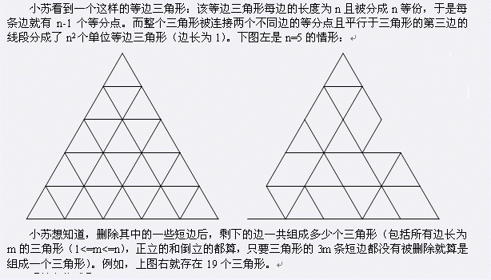
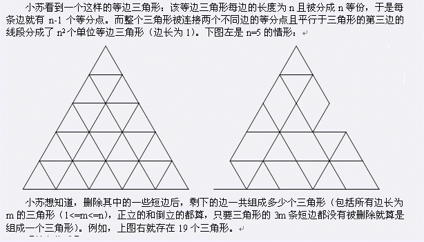
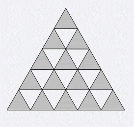

| F.A.Qs | Home | Discuss | ProblemSet | Status | Ranklist | Contest | 入门OJ | ModifyUser Xeonacid | Logout | 捐赠本站 |
|---|
| F.A.Qs | Home | Discuss | ProblemSet | Status | Ranklist | Contest | 入门OJ | ModifyUser Xeonacid | Logout | 捐赠本站 |
|---|

大三角形的所有短边可以看成由(n+1)*n/2个单位三角形的边界组成。如下图的灰色三角形所示。其中第1排有1个灰色三角形，第2排有2个灰色三角形，……，第n排有n个灰色三角形。所以输入格式是这样规定的：输入第一行为正整数n，其中1<=n<=1000，表示大三角形每边的长度。接下来的n行，第i+1行有i组数，从左到右每组数描述一个三角形，每组数都有3个数，这3个数非0即1，表示对应的短边是否被删除，0表示已被删除，1表示未被删除，依次按照三角形的左、右、下边的顺序来描述。所以第i+1行有3i个数，每个数是0或1 
仅包含一个整数T，表示有多少个三角形的边界都没有被删除。